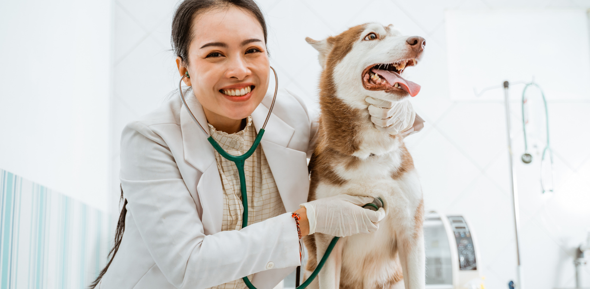

A "Vida Animal" é muito mais do que um espaço de atendimento para animais de estimação. É a realização de um sonho construído com determinação, amor e compromisso por Laura Almeida, periférica e apaixonada pela Medicina Veterinária. Desde pequena, Laura sentia uma conexão especial com os animais. Criada em uma comunidade onde o acesso a serviços veterinários era limitado, ela viu de perto a importância do cuidado responsável e humanizado com os pets. Seu amor pelos bichos e o desejo de fazer a diferença a impulsionaram a seguir uma carreira na Medicina Veterinária. Após anos de estudo e experiência, Laura decidiu dar um passo além e criar um espaço que refletisse seus valores e sua paixão. Assim nasceu a "Vida Animal", um ambiente acolhedor, onde cada pet recebe atendimento com respeito, carinho e dedicação. A clínica oferece consultas, vacinas, exames, atendimento de emergência e procedimentos cirúrgicos, sempre priorizando um cuidado humanizado e acessível. Além do atendimento veterinário, o espaço conta com um petshop completo, com produtos selecionados para garantir a saúde, o conforto e a felicidade dos animais. Aqui, os tutores encontram rações de qualidade, brinquedos, acessórios e itens de higiene, tudo pensado para atender às necessidades dos pets da melhor forma possível. Um espaço criado com amor, por alguém que entende que cuidar de um animal é cuidar de uma parte essencial da família. 🐾 Venha nos conhecer e faça parte dessa história de amor e dedicação pelos animais! 💕